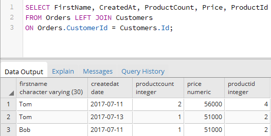

Вернуться на главную страницу →
Вернуться на главную страницу →
OUTER JOIN и CROSS JOIN
OUTER JOIN или внешнее соединение позволяет возвратить все строки одной или двух таблиц, которые участвуют в соединении.
Outer Join имеет следующий формальный синтаксис:
Перед оператором JOIN указывается одно из ключевых слов LEFT, RIGHT или FULL, которые определяют тип соединения:
- LEFT: выборка будет содержать все строки из первой или левой таблицы
- RIGHT: выборка будет содержать все строки из второй или правой таблицы
- FULL: выборка будет содержать все строки из обеих таблиц
Перед оператором JOIN может указываться ключевое слово OUTER, но его применение необязательно. После JOIN указывается присоединяемая таблица, а затем идет условие соединения после оператора ON.
К примеру, возьмем следующие таблицы:
И соединим таблицы Orders и Customers:
Таблица Orders является первой или левой таблицей, а таблица Customers - правой таблицей. Поэтому, так как здесь используется выборка по левой таблице, то вначале будут выбираться все строки из Orders, а затем к ним по условию Orders.CustomerId = Customers.Id будут добавляться связанные строки из Customers.
По вышеприведенному результату может показаться, что левостороннее соединение аналогично INNER Join, но это не так. Inner Join объединяет строки из дух таблиц при соответствии условию. Если одна из таблиц содержит строки, которые не соответствуют этому условию, то данные строки не включаются в выходную выборку. Left Join выбирает все строки первой таблицы и затем присоединяет к ним строки правой таблицы. К примеру, возьмем таблицу Customers и добавим к покупателям информацию об их заказах:
Изменим в примере выше тип соединения на правостороннее:
Теперь будут выбираться все строки из Customers, а к ним уже будет присоединяться связанные по условию строки из таблицы Orders:
Поскольку один из покупателей из таблицы Customers не имеет связанных заказов из Orders, то соответствующие столбцы, которые берутся из Orders, будут иметь значение NULL.
Полное соединение (FULL JOIN) объединяет обе таблицы:
Используем левостороннее соединение для добавления к заказам информации о пользователях и товарах:
И также можно применять более комплексные условия с фильтрацией и сортировкой. Например, выберем все заказы с информацией о клиентах и товарах по тем товарам, у которых цена больше 55000, и отсортируем по дате заказа:
Или выберем всех пользователей из Customers, у которых нет заказов в таблице Orders:
Также можно комбинировать Inner Join и Outer Join:
Вначале по условию к таблице Orders через Inner Join присоединяется связанная информация из Products, затем через Outer Join добавляется информация из таблицы Customers.
Cross Join
Cross Join или перекрестное соединение создает набор строк, где каждая строка из одной таблицы соединяется с каждой строкой из второй таблицы. Например, соединим таблицу заказов Orders и таблицу покупателей Customers:
Если в таблице Orders 3 строки, а в таблице Customers то же три строки, то в результате перекрестного соединения создается 3 * 3 = 9 строк вне зависимости, связаны ли данные строки или нет.
При неявном перекрестном соединении можно опустить оператор CROSS JOIN и просто перечислить все получаемые таблицы: